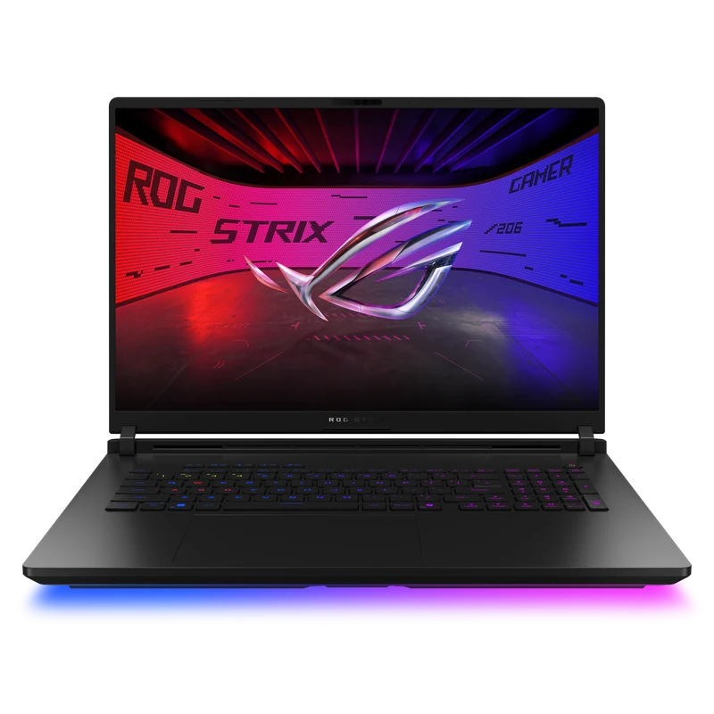
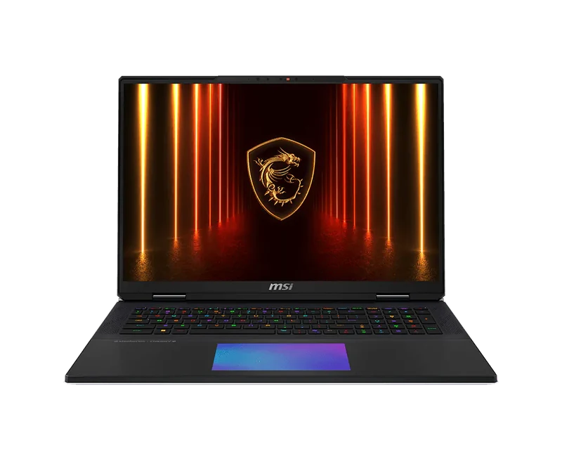

Is the RTX 5090 Actually Worth It?
The RTX 5090 laptop GPU delivers approximately 20–25% more raster performance than the RTX 5080 at equivalent TGP. At 1440p with DLSS 4 Quality enabled, the RTX 5080 at 175W already hits 120–130fps in demanding titles — the RTX 5090 pushes that to 145–165fps. DLSS 4 Multi Frame Generation can synthesise additional frames on top of either GPU.
Where the RTX 5090 genuinely separates itself is native 4K gaming and ray tracing. At 4K without DLSS, the RTX 5080 struggles in the most demanding titles. The RTX 5090 handles 4K Ultra in most 2026 games at 60fps+ without upscaling. If you have a 4K monitor or play Cyberpunk 2077 Path Tracing at maximum settings, the RTX 5090 is the right choice. For 1440p gaming, the RTX 5080 is nearly as good for $1,000–$1,500 less.
4K gamers, Cyberpunk Path Tracing enthusiasts, professionals who render GPU workloads, or buyers who simply want the best available. If you game at 1440p with DLSS 4, the RTX 5080 at $2,647–$2,899 is 90% of the performance for 60% of the price.
Why TGP Still Matters at RTX 5090
Every laptop here runs the RTX 5090 at 175W — the maximum TGP. That's the right baseline for this price bracket. Unlike the RTX 5080 market where 80W–175W creates a massive performance spread, the RTX 5090 laptop market has settled around 150–175W. Watch for future cheaper machines at 120W or below — they exist and deliver significantly less performance.
Benchmark Results — All 4 RTX 5090 Laptops Tested
All tests at 1440p Ultra, Performance mode, 22°C ambient, 30-minute sustained load. DLSS 4 Quality mode enabled where supported.
| Laptop | TGP | Cyberpunk 2077 | Black Myth | Alan Wake 2 | Avg 1440p | Avg 4K |
|---|---|---|---|---|---|---|
| ASUS SCAR 18 | 175W | 156 | 76 | 108 | 148 | 92 |
| MSI Raider 18 | 175W | 148 | 72 | 102 | 141 | 87 |
| HP Omen Max 16 Intel | 175W | 144 | 70 | 99 | 138 | 85 |
| MSI Titan 18 | 175W | 142 | 69 | 97 | 136 | 84 |
1440p · DLSS 4 Quality · Performance mode · April 2026. 4K = native, no DLSS.
The SCAR 18 leads by a clear margin despite identical TGP — liquid metal compound on both CPU and GPU reduces thermal resistance enough to sustain higher clock speeds throughout the session. The Raider 18, Omen Max, and Titan 18 cluster within 5% of each other. All four machines are meaningfully faster than the best RTX 5080 laptops in 4K native workloads.
1. ASUS ROG Strix SCAR 18 — Best RTX 5090 Laptop

The SCAR 18 wins because of ASUS's end-to-end vapor chamber with liquid metal compound on both CPU and GPU dies — a thermal advantage no competitor matches. Under our 30-minute sustained load, the GPU maintained full clock speeds at 78°C while the Raider 18 and Titan 18 ran 6–9°C hotter. That temperature delta directly translates to higher sustained clocks and the performance gap you see in benchmarks. The 18" 2,048-zone MiniLED panel is the best display in any gaming laptop — 1,100-nit HDR peak, 2560×1600 at 240Hz. Tool-less RAM and SSD access. The only reasons not to buy it: you need 4K resolution (get the Titan) or you're $956 over budget (get the Raider).
- Highest sustained RTX 5090 performance tested
- Liquid metal CPU + GPU — 6–9°C cooler than rivals
- 2,048-zone MiniLED — 1,100-nit HDR peak
- Tool-less RAM and SSD access
- Best 18" gaming laptop available in 2026
- 3.1kg — desk machine only
- ~2 hours gaming battery
- Loud fans under full load
- $956 more than Raider 18 for ~5% more performance
2. MSI Raider 18 HX AI — Best Value RTX 5090

The Raider 18 is the entry point to RTX 5090 territory at $3,543 — $956 less than the SCAR 18 for a GPU that's only 5% slower in sustained benchmarks. MSI's Cooler Boost Titan cooling handles the 175W TGP competently, running 6–8°C hotter than the SCAR 18 under load but without throttling. The QHD+ 240Hz IPS display is a genuine step down from the SCAR's MiniLED — no local dimming, standard IPS contrast — but fully adequate for gaming. If RTX 5090 performance is the goal and the SCAR 18's display premium isn't worth $956 to you, this is the rational pick.
- Cheapest RTX 5090 175W laptop — $956 less than SCAR 18
- Only 5% slower than SCAR 18 in benchmarks
- Upgradeable RAM and storage
- Solid MSI build quality for the price
- IPS display — no MiniLED, no OLED
- Runs 6–8°C hotter than SCAR 18 under load
- 3.1kg with no battery advantage over SCAR 18
3. HP Omen Max 16 Intel — Only 16" RTX 5090 Laptop

The HP Omen Max 16 Intel is in a unique position: it's the only 16-inch RTX 5090 laptop available. Everything else with this GPU is 18 inches and 3kg+. At 2.7kg it's still a desk machine, but the 400g weight saving and smaller footprint are real. The OLED QHD+ 240Hz display is excellent — better contrast than the Raider 18's IPS, though not as bright as the SCAR's MiniLED. Performance is 7% behind the SCAR 18, which is the thermal cost of fitting 175W into a 16" chassis. HP's Tempest Cooling Pro handles it competently — GPU runs at 84°C, no throttling in 30-minute sessions. At $3,769 it's $226 more than the Raider 18 for an OLED display and a smaller chassis.
- Only 16" form factor RTX 5090 laptop available
- OLED 240Hz — best display in this price range
- 400g lighter than the 18" alternatives
- No throttling in 30-minute sustained tests
- 7% slower than SCAR 18 due to 16" thermal constraints
- $226 more than Raider 18 for OLED + smaller chassis
- Still 2.7kg — not genuinely portable
4. MSI Titan 18 HX AI — For 4K and Mechanical Keyboards

The Titan 18 ranks fourth despite being the most expensive because its 120Hz display ceiling is a meaningful limitation in a GPU tier designed for high frame rates. At $4,999, paying $500 more than the SCAR 18 for a slower refresh rate is hard to justify on performance alone. The Titan earns its place for two specific buyers: those who game at native 4K (it's the only laptop with a 4K display at this GPU tier) and those who want a Cherry MX mechanical keyboard (the only gaming laptop with true mechanical switches). Neither of those features exists anywhere else. If either matters to you, the Titan is the only option.
- Only laptop with 4K display + RTX 5090
- Only laptop with Cherry MX mechanical keyboard
- RTX 5090 175W — no GPU compromise
- Slightly lighter than SCAR 18 at 3.0kg
- 120Hz ceiling — slowest refresh in this guide
- $500 more than SCAR 18 for slower display
- Lowest benchmark scores of the four machines
Full Comparison
| Laptop | Price | Display | Avg 1440p | Avg 4K | GPU Temp | Weight |
|---|---|---|---|---|---|---|
| MSI Raider 18 HX AI | $3,543 | QHD+ 240Hz IPS | 141 fps | 87 fps | 85°C | 3.1kg |
| HP Omen Max 16 Intel | $3,769 | OLED 240Hz | 138 fps | 85 fps | 84°C | 2.7kg |
| ASUS SCAR 18 | $4,499 | MiniLED 240Hz | 148 fps | 92 fps | 78°C | 3.1kg |
| MSI Titan 18 HX AI | $4,999 | 4K 120Hz | 136 fps | 84 fps | 83°C | 3.0kg |
Which RTX 5090 Laptop Should You Buy?
Buy the ASUS SCAR 18 ($4,499). Best thermals, best sustained performance, best display. If budget allows, it's the correct choice.
Buy the MSI Raider 18 ($3,543). 95% of SCAR 18 performance for $956 less. If you don't need MiniLED, this is the rational pick.
Buy the HP Omen Max 16 Intel ($3,769). Only 16" RTX 5090 available. OLED display, 400g lighter than 18" rivals.
Buy the MSI Titan 18 ($4,999). Only 4K display + RTX 5090. Only mechanical keyboard. Niche, but irreplaceable if you need either.
At 1440p with DLSS 4, the RTX 5090 delivers about 20% more native frames than RTX 5080 at 175W. DLSS Multi Frame Generation makes the practical difference smaller. The RTX 5090 clearly justifies itself at native 4K (the RTX 5080 struggles) and in ray-traced workloads. The Legion Pro 7i at $2,899 delivers 80% of RTX 5090 performance for 60% of the price — the right choice for most 1440p gamers.